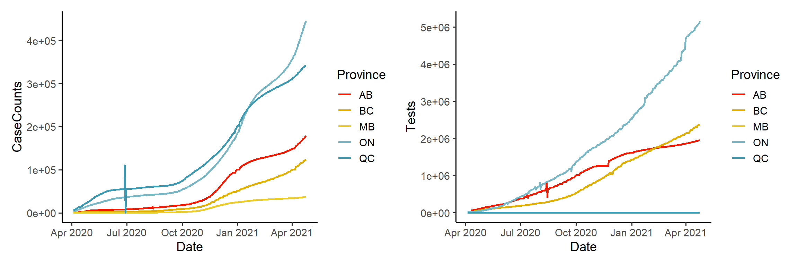
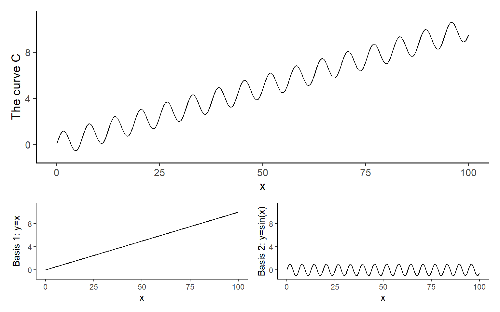
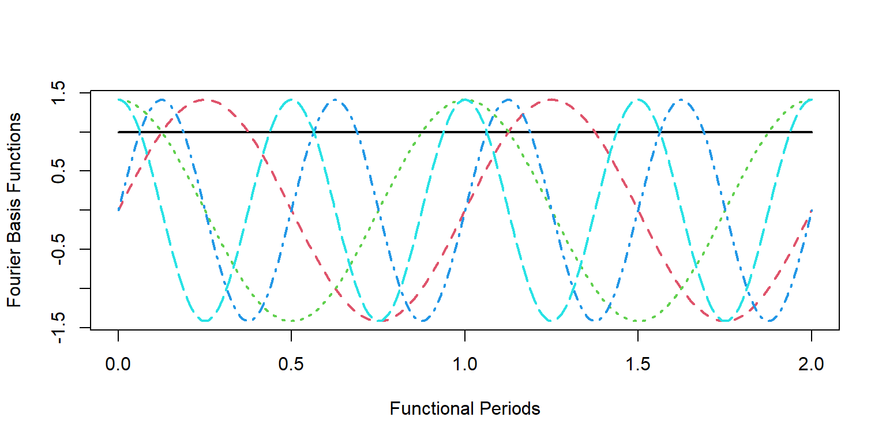
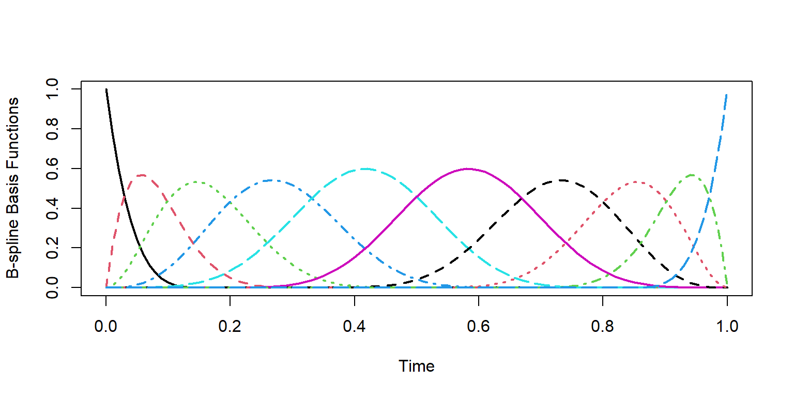
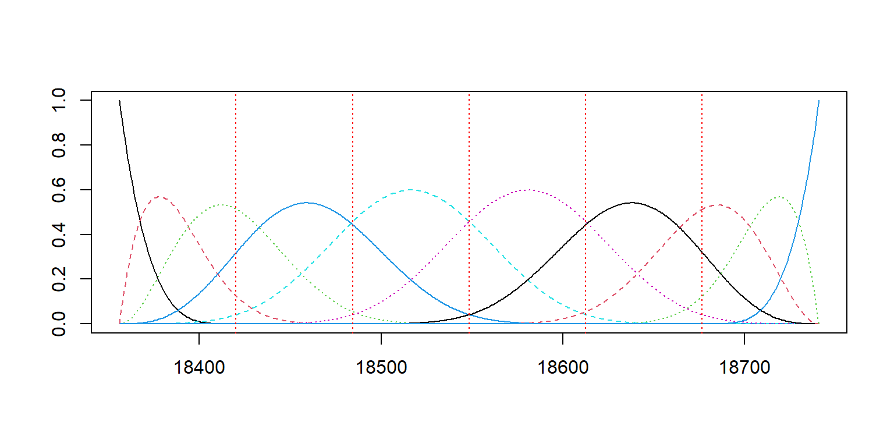
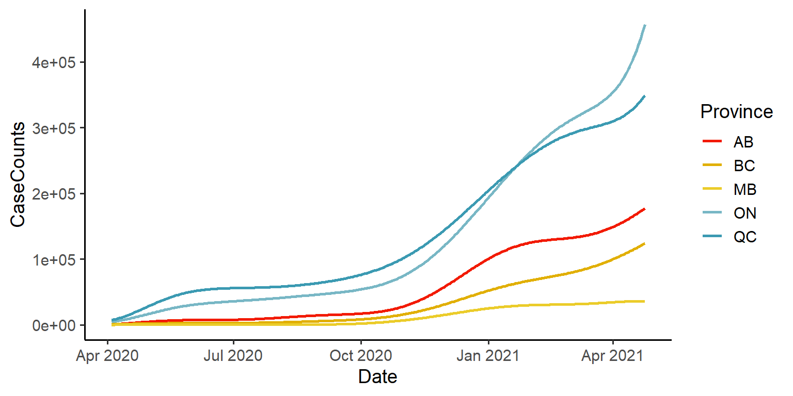
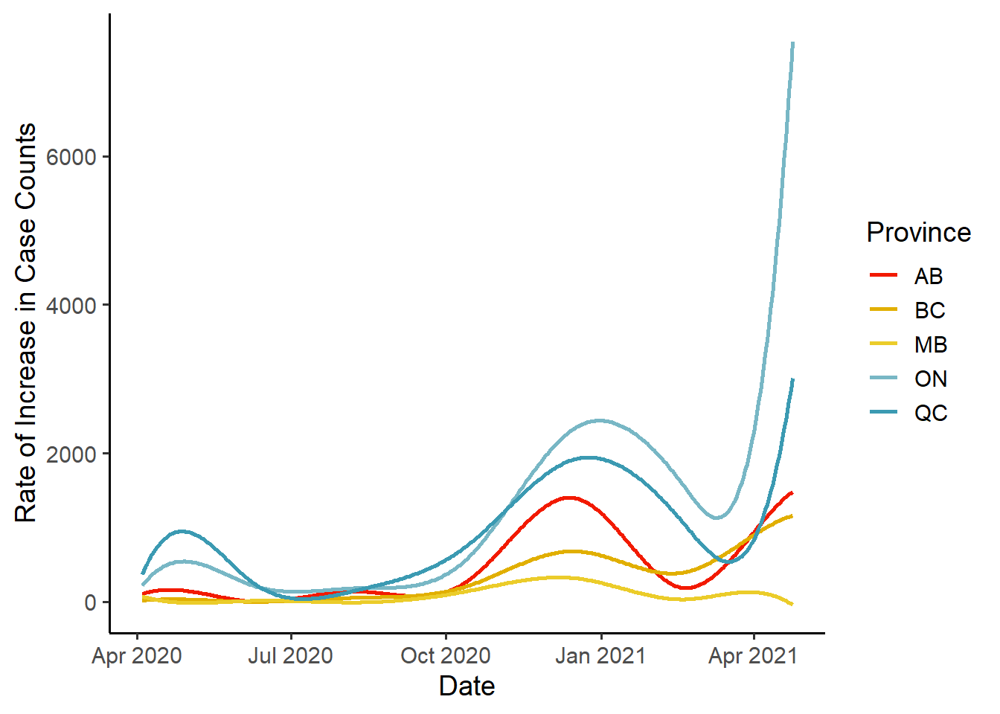
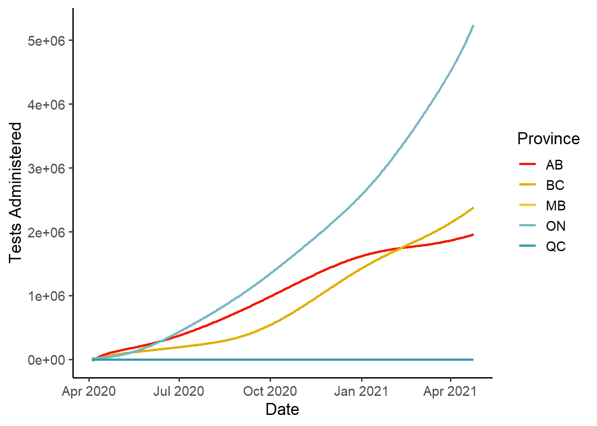
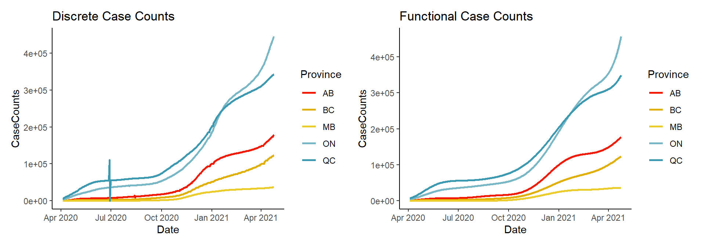

Functional data can come from many different areas of study. Some of the most common examples come from finance (for example stock prices over time), or from health research (such as fMRI time series). Analyzing data of this form has been done traditionally using time series analysis techniques. However, viewing the data as functional, rather than individual observed points, can lead to more natural interpretations and analysis. Here we will be looking at a single example data set, and learning how to represent discrete data as functional data objects.
Since we will be working in R, we should install any packages that we will be using. Today we will be looking at the package fda:
install.packages("fda")
library("fda")We will use the tidyverse set of packages for data prep/cleaning:
install.packages("tidyverse")
library("tidyverse")We will use patchwork for multi-plots:
install.packages("patchwork")
library("patchwork")We will use wesanderson for some nice color palettes:
install.packages("wesanderson")
library("wesanderson")And we will also use the lubridate package for date-time data prep:
install.packages("lubridate")
library("lubridate")Finally, we will use the reshape2 package for the ever useful melt() function:
install.packages("reshape2")
library("reshape2")The data we will be looking at today is the Canadian COVID-19 provincial case count data, available directly from resources-covid19canada.hub.arcgis.com:
rawdat = read.csv("data/Health_Regional_Archive_(Public_View).csv")
colnames(rawdat)## [1] "ï..OBJECTID" "HR_UID" "Province" "CaseCount" "Deaths"
## [6] "Recovered" "Tests" "Last_Updated" "GlobalID"We will be looking at the columns Last_Updated, Province, CaseCount, and Tests. You can think of each Province as an individual ‘subject’, where we track case counts and administered tests for each recorded day.
dat = rawdat %>%
dplyr::select(SummaryDate=Last_Updated, Province, CaseCount, Tests) %>%
group_by(Province) %>%
mutate(Date=round_date(ymd_hms(SummaryDate), unit = "day")) %>%
dplyr::select(-SummaryDate) %>%
group_by(Province, Date) %>%
summarise(CaseCounts=sum(CaseCount, na.rm = T), Tests=sum(Tests, na.rm = T))## `summarise()` regrouping output by 'Province' (override with `.groups` argument)colnames(dat)## [1] "Province" "Date" "CaseCounts" "Tests"We’d better make sure that we have the correct Province data:
unique(dat$Province)## [1] "AB" "BC" "MB" "NB" "NL" "NS" "NT" "NU" "ON" "PE" "QC" "SK" "YT"Let’s have a look at the data:
dat_clean = dat %>% filter(Province %in% c("AB", "BC", "ON", "MB", "QC"))
pal <- rev(wes_palette("Zissou1", n=length(unique(dat_clean$Province)), type = "continuous"))
plot1 = ggplot(data=dat_clean) +
geom_line(aes(x=Date, y=CaseCounts, color=Province), size=1, na.rm = T) +
scale_color_manual(values = pal) +
theme_classic(base_size = 14)
plot2 = ggplot(data=dat_clean) +
geom_line(aes(x=Date, y=Tests, color=Province), size=1, na.rm = T) +
scale_color_manual(values = pal) +
theme_classic(base_size = 14)
plot1 + plot2
Now we have many discrete observations sampled from continuous curves. We can create a functional data representation of these observations, so that we can work with the curves themselves rather than the discrete points. There are several steps involved in this, and we will go through each step now.
Basis functions are used to represent complex curves as simple linear combinations of known curves. For example, you can imagine representing the curve \(C\) (shown in the figure below) as a linear combination of the curves \(y = x\), and \(y=sin(x)\):

In this example, the basis functions are \(y=x\) and \(y=sin(x)\).
First we will need to choose a set of basis functions to work with. There are many options, and the choice you make here will influence the properties of the fitted curves substantially. For example, if you are working with periodic data (such as hourly temperature data over many days), then a periodic basis would be appropriate. The Fourier Basis is one such set of periodic basis functions:
# create 4 Fourier basis functions
basis_fourier = create.fourier.basis(rangeval = c(0,1), nbasis = 4)
# evaluate the basis functions at discrete points
pts <- seq(0,2,by = 0.01)
basis_obs <- eval.basis(pts, basis_fourier)
matplot(pts, basis_obs, type = 'l', lwd = 2, cex = 3,
xlab = "Functional Periods",
ylab = "Fourier Basis Functions")
Another common set of basis functions are the B-spline functions. This set of basis functions is non-periodic, and is particularly suited to our needs with the COVID case counts:
# create 10 B-spline basis functions
basis_bs = create.bspline.basis(rangeval = c(0,1), nbasis = 10, norder = 5)
# evaluate the basis functions at discrete points
pts <- seq(0,1,by = 0.01)
basis_obs <- eval.basis(pts, basis_bs)
matplot(pts, basis_obs, type = 'l', lwd = 2, cex = 3,
xlab = "Time",
ylab = "B-spline Basis Functions")
Moving forward we will use this B-spline functional basis:
# create 10 B-spline basis functions
basis_bs = create.bspline.basis(c(as_date(min(dat_clean$Date)),
as_date(max(dat_clean$Date))),
nbasis = 10, norder = 5)
# evaluate the basis functions at discrete points
plot(basis_bs)
Smoothing allows for noise in the data to be smoothed out. Just like choosing a functional basis was an important choice in representing our functional data, the level of smoothing is another essential choice. Without smoothing, we don’t penalize sharp changes in the shape of the curve, however with smoothing, we can enforce smoothness of the function up to a chosen number of derivatives. For simplicity, we will smooth up to the second derivative, which will allow us later to look at the rate of change of our functions (using the first derivative).
{{% alert note %}} Data Transformation?
See this post by Craig Hutton for an excellent overview of data transformation techniques, including pivot_wider(), which we use here.
{{% /alert %}}
Smoothing is very easy to implement:
# we need a matrix with columns = subjects (provinces), rows = replicates (dates)
Mdat = dat_clean %>%
pivot_wider(id_cols = c(Date, Province),
names_from = Province,
values_from = CaseCounts) %>%
data.matrix()
Mdat = Mdat[,-1]
# setup smoothing parameters
# fdobj: the basis functions to use
# Lfdobj: the derivative degree to smooth
# lambda: smoothing penalty
smoothPar = fdPar(fdobj = basis_bs, Lfdobj=2, lambda=1)
# smoothed functional data
dat_fd = smooth.basis(argvals = as_date(unique(dat_clean$Date)), y = Mdat, fdParobj = smoothPar)Great! So we have the ability to represent the data in functional form using basis functions and smoothing.
We can visualize the smoothed data:
dates = seq(min(dat_fd$argvals), max(dat_fd$argvals), by = 'days')
dates2 = seq(min(dat_fd$argvals), max(dat_fd$argvals), by = 'quarter')
obs_fd = eval.fd(evalarg = dates, fdobj = dat_fd$fd)
obs_fd = as.data.frame(obs_fd)
obs_fd$Dates = dates
obs_fd_df = melt(obs_fd, measure.vars = 1:5)
colnames(obs_fd_df) = c("Date", "Province", "CaseCounts")
ggplot(data=obs_fd_df) +
geom_line(aes(x=Date, y=CaseCounts, colour=Province),
size=1, na.rm = T) +
scale_color_manual(values = pal) +
theme_classic(base_size = 14)
Now that we have our data represented as functional data, we can ask questions such as “how are the case counts changing with time?”. To answer this, we look at the first derivative of the data:
# we evaluate the function, using Lfdobj to specify the first derivative
div1_obs1_fd = eval.fd(evalarg = dates, fdobj = dat_fd$fd, Lfdobj = 1)
div1_obs_fd = as.data.frame(div1_obs1_fd)
div1_obs_fd$Dates = dates
div1_obs_fd_df = melt(div1_obs_fd, measure.vars = 1:5)
colnames(div1_obs_fd_df) = c("Date", "Province", "CaseCounts")
ggplot(data=div1_obs_fd_df) +
geom_line(aes(x=Date, y=CaseCounts, colour=Province),
size=1, na.rm = T) +
scale_color_manual(values = pal) +
ylab("Rate of Increase in Case Counts") +
theme_classic(base_size = 14)
We can repeat this procedure to get our Tests Administered data into functional form:
# we need a matrix with columns = subjects (provinces), rows = replicates (dates)
Mdat2 = dat_clean %>%
pivot_wider(id_cols = c(Date, Province),
names_from = Province,
values_from = Tests) %>%
data.matrix()
Mdat2 = Mdat2[,-1]
# setup smoothing parameters
smoothPar = fdPar(fdobj = basis_bs, Lfdobj=2, lambda=1)
# smoothed functional data
test1_fd = smooth.basis(argvals = as_date(unique(dat_clean$Date)), y = Mdat2, fdParobj = smoothPar)
# visualize the tests data:
test_fd = eval.fd(evalarg = dates, fdobj = test1_fd$fd)
test_fd = as.data.frame(test_fd)
test_fd$Dates = dates
test_fd_df = melt(test_fd, measure.vars = 1:5)
colnames(test_fd_df) = c("Date", "Province", "Tests")
ggplot(data=test_fd_df) +
geom_line(aes(x=Date, y=Tests, colour=Province),
size = 1, na.rm = T) +
ylab("Tests Administered") +
scale_color_manual(values = pal) +
theme_classic(base_size = 14)
Let’s compare the functional data representations against their original discrete data counterparts:
plot1 = ggplot(data=dat_clean) +
geom_line(aes(x=Date, y=CaseCounts, color=Province),
size=1, na.rm = T) +
scale_color_manual(values = pal) +
theme_classic(base_size = 11) +
ggtitle("Discrete Case Counts")
plot2 = ggplot(data=obs_fd_df) +
geom_line(aes(x=Date, y=CaseCounts, colour=Province),
size=1, na.rm = T) +
scale_color_manual(values = pal) +
theme_classic(base_size = 11) +
ggtitle("Functional Case Counts")
plot1 + plot2
You can see that the general shape of the data has remained the same. However, notice in the left hand plot, that there are discontinuities such as the spike and dip for Quebec, around July 2020. These discontinuities, which are likely due to misreporting and future data corrections, as well as periods of non-reporting, are all smoothed away in the functional representation in the right hand plot.
There is of course a tremendous amount more that can be done with functional data. Now that we have our data in a usable functional form, we could consider a number of further analyses. Some examples include functional regression (function on function or function on scalar perhaps), functional principal components (fPCA), interval testing (such as the Interval Testing Procedure of Pini and Vantini 2016), etc. Hopefully this is enough to get you started working on your own functional data!